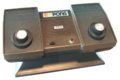

La Historia De Las Consolas
Por Generaciones
Pimera Generacion
Si bien los primeros juegos de computadora aparecieron en la década de los 1940, éstos utilizaban pantallas vectoriales, no de vídeo analógico. No fue hasta 1972 cuando se lanzó la primera videoconsola de sobremesa por la compañía electrónica Magnavox.1 La Magnavox Odyssey, fue creada por Ralph Baer, considerado como el padre de los videojuegos.2 La Odyssey tuvo un moderado éxito, sin embargo, con el lanzamiento del juego arcade Pong de Atari, comenzaron a popularizarse los videojuegos, el público comenzó a mostrar interés ante la nueva industria. En el otoño de 1975, la compañía Magnavox, cede ante la popularidad del Pong, se cancela el proyecto Odyssey, ya que el público sólo jugaba al Pong y Hockey en la Odyssey 100.
Una posterior actualización de la consola Odyssey 100, la 200, llevaba incorporada una pantalla de puntuación, permitía hasta 4 jugadores, y se vendía junto con un tercer juego: Smash. Casi simultáneamente, la cadena de centros comerciales Sears compró los derechos del sistema Atari Pong y lo introdujeron en el mercado de consumo bajo el nombre de Sears-Telegames. Al igual que en el mercado arcade, el mer cado pronto fue inundado por consolas clones de Pong y juegos derivados.
El mercado inicial era frágil y compuesto por unas pocas compañías pequeñas, vendiendo sistemas hechos con componentes electrónicos básicos. Pero cuando General Instruments lanzó el primer chip de bajo coste que reproducía el juego de PONG sólo usando un puñado de componentes adicionales, una industria entera nació, llevando a centenares de compañías, muchas de ellas muy locales, a lanzar sus propias líneas de consolas PONG.
Segunda Generacion
En esta generación resaltaron Atari 2600, Colecovision, Mattel Intellivision y la Atari 5200. El dominio absoluto fue de Atari, aunque tuvo al menos dos rivales destacables. Colecovision con el doble de colores que la 2600 e Intellivision de Mattel que por primera vez en la historia incluye una CPU de 16 bits.
Fairchild, siendo la primera, patentó además el sistema de cartuchos. Esta es la llamada patente 555, que cuando la compañía quebró años más tarde, se definió como la única cosa de valor que quedaba de Fairchild. Alpex, que fue la compañía creada para explotar dichos derechos, vivió durante muchos años simplemente de cobrar por el uso de cartuchos intercambiables, hasta que Nintendo, en un caso famoso (ALPEX COMPUTER CORP. v. NINTENDO CO., LTD), se opuso a ello.
En 1977, Atari lanzaría su VCS, que más tarde se llamaría Atari 2600. Esta se convertiría en la consola (de lejos) más popular de la generación, también en Europa, dónde llegaría un año más tarde.
La Bally Astrocade (originalmente Bally Home Library Computer) fue lanzada también en 1977, pero sólo disponible a través de pedidos por correo. Nunca tuvo demasiada popularidad y tampoco ayudó el poco interés de Bally en el mercado arcade. La Bally también desapareció con el crash del 83.
La Bally Astrocade (originalmente Bally Home Library Computer) fue lanzada también en 1977, pero sólo disponible a través de pedidos por correo. Nunca tuvo demasiada popularidad y tampoco ayudó el poco interés de Bally en el mercado arcade. La Bally también desapareció con el crash del 83.


Tercera Generacion
Tras la crisis de los videojuegos, el mundo de las consolas prácticamente es un monopolio japonés. En esta generación las consolas como la NES (Nintendo Entertainment System) , Famicom (así se llamaba la NES en Japón) o Hyundai Comboy (llamada asi en Corea del Sur) y la Sega Master System tenían 8 Bits. La NES domina prácticamente sola hasta la llegada de Mega Drive en 1988.
No fue hasta dos años más tarde, y con mucho esfuerzo que Nintendo se atrevió a lanzar la NES (Nintendo Entertainment System) en el mercado americano. Tras un éxito inesperado, Europa la recibiría entre 1986 y 1987. Esta es la generación del resurgimiento y establecimiento de un mercado que muchos dieron por muerto en 1985. La NES dominó el mercado mundial hasta la siguiente generación, y de hecho fue la consola más vendida de la historia hasta que la primera PlayStation la superó a finales de siglo, con 62 millones de consolas vendidas. Le siguió, bastante de lejos, la Master System, que aún siendo algo más potente no logró el soporte de terceros que tuvo Nintendo. Pinchó en Japón y EEUU, pero, sorprendentemente, superó durante mucho tiempo a la NES en dos mercados: Europa y Brasil. Sumó aproximadamente 12 millones en ventas. La tercera y última consola que vimos de esta generación fue una Atari 7800 condenada al fracaso desde su lanzamiento. Sólo logró un soporte parecido a la Master System en EEUU, su mercado casero. En el exterior, sus resultados fueron residuales, quedándose por debajo de los 4 millones de unidades en total.
Cuarta Generacion
En 1987 NEC y Hudson, ponen la consola PC Engine en Japón o Turbografx en el resto del mundo, que tienen una CPU de 8 bits pero un chip gráfico de 16 bits. En 1988 Sega presenta su consola con una CPU de 16 bits conocida como Sega Genesis en América y Sega Mega Drive en Europa y Asia. En 1990 Nintendo saca su consola de 16bits Super Nintendo y este mismo año, la productora de arcades SNK saca Neo-Geo, la consola más potente de esta generación llamada el Rolls Royce de las consolas por su elevado precio. Esta generación destaca, por los chips gráficos añadidos al cartucho, como el Super FX y SVP y las ampliaciones de hardware de Mega Drive: Mega CD y Sega 32X. Aparecen conceptos como multitarea, multimedia, gráficos vectoriales, etc... Super Nintendo es la consola más vendida con 49 millones de unidades, aunque la más vendida en Europa es Mega Drive.
Otras compañías lanzaron consolas en esta generación, generalmente hacia el final de la misma, a principios de los noventa, pero, salvo la Neo-Geo de SNK, ninguna gozó de popularidad. No obstante, algunas compañías que todavía no estaban en la industria aprovecharon la cuarta generación para preparar sus planes de cara a la siguiente generación, cambiando radicalmente el panorama en la quinta generación de consolas.


Quinta Generacion
En la quinta generación nos encontramos con muchos fabricantes de juegos que presentaron diversos equipos con características parecidas a las de un PC. Estos fabricantes comenzaron a presentar títulos en un entorno 3D, aprovechando la mayor capacidad de hardware de los equipos. A esta generación se la conoce como la "era de los 32 bits", aunque ocasionalmente algunas personas se refieren a ella como la era de los 64 bits puesto que Nintendo lanzaría dos años más tarde un sistema que rompería este apodo. Se trata de la consola Nintendo 64, a la que raramente se llama también la "era 3D". Se trata de una generación que supuso el paso de los 2D a los entornos tridimensionales 3D, que comenzó en el año 1994 cuando Sega lanzó su Sega Saturn y Sony su PlayStation, la cual supuso la irrupción de esta compañía en el mundo de los videojuegos. Básicamente el mercado estaba dominado por tres consolas, Nintendo 64 (1996), Sega Saturn (1994) y PlayStation (1994). La demografía en las ventas de consolas varió considerablemente, pero estas consolas definieron la guerra de consolas de esta era. La 3DO Interactive Multiplayer y la Atari Jaguar fueron también parte de esta era, pero su marketing fue pobre y fallaron a la hora de crear impacto. Esta era también vio una versión actualizada de la Game Boy de Nintendo: la Game Boy Color.
Los entornos 3D potenciaron la creatividad, abriendo una puerta a lo desconocido. Los juegos podían ser más complejos y libres de restricciones. Pero esto llevaba a otro conflicto: la capacidad. Así que la quinta generación fue la que vio, de alguna forma, morir el cartucho. Los soportes ópticos daban una capacidad incomparable a un precio mucho menor, lo que permitía introducir escenas cinemáticas, por ejemplo. Si ya habíamos visto que los bits no tenían mucho sentido por si solos cuando hablábamos de las consolas de tercera o de cuarta generación, es en la quinta donde desaparece el concepto. Aunque la Nintendo 64 y la Atari Jaguar hicieron énfasis en su procesador de 64 bits (discutible en el caso de la Atari Jaguar), una vez llegado al nivel de los 32-bits el rendimiento dependía mucho más de otros elementos, como la velocidad del procesador, el ancho de banda o la memoria.
Sexta Generacion
En esta generación, se produjeron equipos con similitudes a la arquitectura de un computador personal, no obstante, las consolas de sobremesa prescindieron de los cartuchos y utilizan medios de almacenamiento de gran capacidad como el DVD, GD-ROM, GOD. Lo cual hizo que los juegos fuesen más largos y visualmente atractivos. Además, esta generación también experimenta el videojuego en línea en las consolas y la aplicación de sistemas almacenamiento internos en los equipos como memoria flash y disco duros que son utilizados para guardar datos del videojuego.
La sexta generación de consolas fue un tiempo de maduración. Tras una quinta generación relativamente caótica, las consolas lanzadas en esta generación fueron muchas menos y, en general, mucho más homogéneas. Fue en esta generación en la que los juegos multiplataforma (es decir, que aparecían para todas las competidoras a la vez) se volvieron mucho más comunes. Las consolas tenían diseños base parecidos, tanto en filosofía como en capacidades – aunque cabe destacar que gráficamente, tanto la GameCube como la Xbox eran ligeramente más avanzadas – así que los juegos podían ser más fácilmente producidos para la PlayStation 2, la Xbox y la GameCube a la vez. Aunque las dos últimas fueran más potentes, la inmensa mayoría de los juegos se producían para PlayStation 2 y luego se portaban – con algunas mejoras, en contadas veces – a los otros dos sistemas, con lo que las diferencias raramente se notaban, afortunadamente para Sony y su consola. Si hubiese sido al revés, la historia podría haber sido muy distinta. De la PlayStation 2 hay poco que decir que no sepamos. Muchos factores influyeron en que se convirtiese en la consola más vendida de la historia, pero entre ellos destacaríamos el aprovechamiento de la base instalada de usuarios de Sony con la PlayStation original, la capacidad de serie de reproducción de DVD doméstico y el haberse asegurado algunas exclusivas que terminaron de fundamentar su prevalencia.


Septima Generacion
Esta generación se caracteriza por la introducción de la tecnología multinúcleo en la unidad central de procesamiento. También está marcada por la integración del formato de disco óptico Blu-ray y los controladores inalámbricos y la detección de movimiento que han "desplazado" el clásico controlador por cable. Otro aspecto importante es la distribución de juegos vía Internet, gracias a la aparición del servicio de banda ancha a nivel mundial. Algunos de los servicios de Internet que dan soporte técnico a los juegos multijugador es la Xbox Live de Microsoft, la PlayStation Network de Sony y la Nintendo WiFi Connection de Nintendo. Otro aspecto importante que caracteriza esta generación a las otras, es la inclusión de chips gráficos sofisticados que ayudan a procesar imágenes reales tal es el caso del procesador digital GPU En esta generación Sega dejó de competir con las principales videoconsolas para dirigirse a un mercado de menor escala con el lanzamiento de su miniconsola Sega Zone que al igual que las demás consolas de la generación, está equipada con sensores de movimiento. En este mismo mercado aparece la miniconsola Zeebo que ofrecía juegos en línea y que más tarde anunciaría el cese de su producción. Vtech llegó a la séptima generación con su V Smile Moniton, una consola que paso en 2008 que Zeebo en precederlo al 1. Únicamente tres compañías se disputan el mercado a gran escala: Nintendo, Sony y Microsoft. Nintendo y Sony son empresas de origen de Japón, mientras que Microsoft es la única empresa de origen de los Estados Unidos que disputa el mercado de videoconsolas a gran escala). A finales del año 2005, la Xbox 360 de Microsoft fue la primera en aparecer en esta generación. En noviembre de 2006, aparecen la Wii de Nintendo y la PlayStation 3 de Sony. Respecto a las ventas, la compañía Nintendo recupera el mercado, gracias al nuevo enfoque con el cual se diseñó la Wii, para así posicionarse en el primer lugar en las ventas de videoconsolas de sobremesa.
Octava Generacion
Lo destacable de esta generación es el uso de internet como eje central de la funcionalidad de las consolas, esto convertidos en media centers juntando un único aparato, las funciones de consola de juegos y bazar de venta de películas, series de TV y otros contenidos desde el propio aparato. Aunque las generaciones anteriores de videoconsolas normalmente se han sucedido en ciclos de cinco años, la transición de la séptima a la octava generación ha durado más de seis años. La transición es igual de usual en que la consola sobremesa de la anterior generación que tuvo mas ventas, la Wii, es la primera en tener sucesora.
La octava generación comienza con el lanzamiento de Nintendo 3DS, el 25 de febrero de 2011, seguido después por el de PlayStation Vita de Sony, que fue lanzada el 17 de diciembre del mismo año y la revisión de la anterior Nintendo 3DS, Nintendo 3DS XL. Oficialmente la octava generación de consolas inicio el 18 de noviembre de 2012 cuando Nintendo sacó a la venta Wii U debido a que esta es la primera consola de sobremesa de la octava generación. Nintendo anunció la sucesora de su consola de sobremesa, la Wii U el 18 de noviembre de 2012.11512 Una segunda consola de sobremesa, Ouya, fue anunciada. Será la primera videoconsola de Android y salió a la venta en 2013. En un Nintendo Direct japonés en agosto de 2014, se anunció una nueva revisión de la Nintendo 3DS, New Nintendo 3DS, con múltiples mejoras incluyendo compatibilidad con las figuras Amiibo.